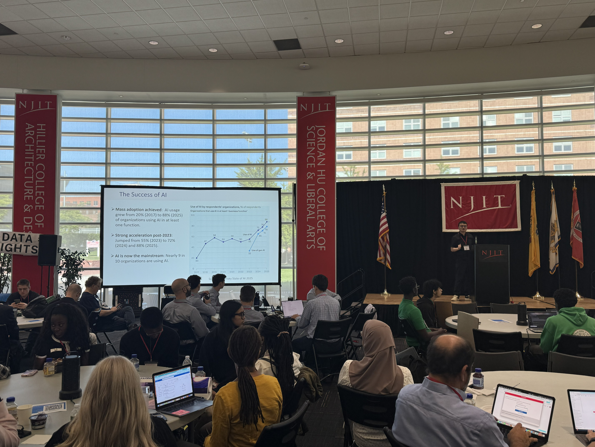
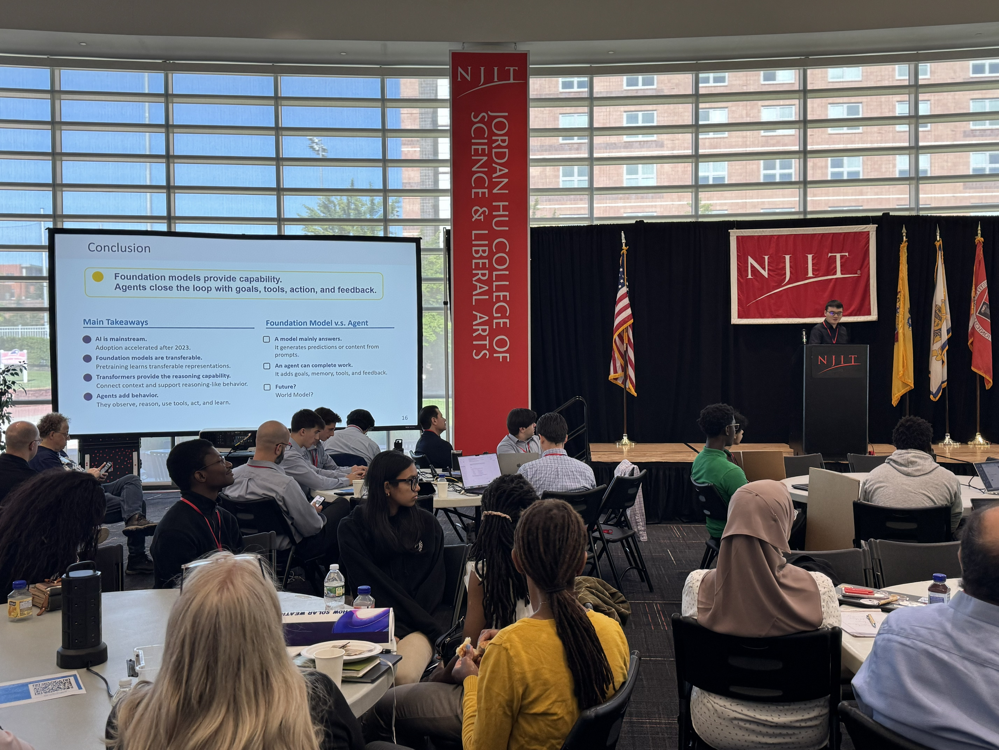
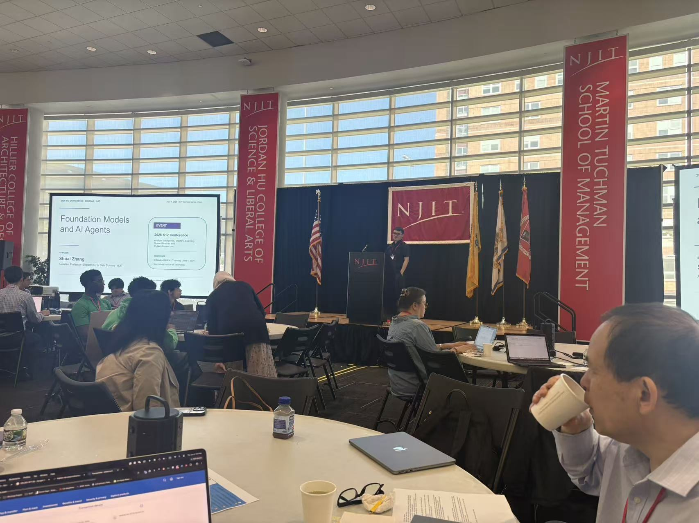

Talks and Outreach Highlights
Invited Talks and Keynote Presentations
-
NASA K–12 AI, ML, Space Weather & Cyberinfrastructure Conference 2026 @ NJIT, Keynote, “Foundation Models and AI Agents,” Jun. 2026.
-
Data Science @ City University of Hong Kong, Invited Talk (Online), “Toward a Theoretical Understanding of Foundation Models: Feature Learning, Optimization Dynamics, and Generalization,” Jun. 2026.
-
ECE Seminar @ Illinois Institute of Technology, Invited Talk, “Toward a Theoretical Understanding of Foundation Models: Feature Learning, Optimization Dynamics, and Generalization,” Jun. 2026.
-
INFORMS Annual Meeting 2024, Invited Talk, “Provable Efficient Graph Neural Network Learning via Joint Edge-Model Sparsification,” 2024.
-
NSF Computer Systems Research Principal Investigators Meeting 2025, Poster Presentation, “Interpretable and Efficient Signal Processing and Deep Learning over Graphs for Spatio-Temporal Data Analysis in AIoT Systems,” 2025.
Selected Photos: NASA K–12 Keynote



Keynote presentation on “Foundation Models and AI Agents” at the NASA K–12 AI, ML, Space Weather & Cyberinfrastructure Conference 2026 @ NJIT.
Research and Outreach Demonstrations
This section showcases selected research demos developed by our group and used in outreach events to introduce students, educators, and broader audiences to modern AI technologies. Through visual examples, interactive demonstrations, and project showcases, these demos aim to make concepts such as remote sensing super-resolution, multimodal data fusion, reinforcement learning, and sequential decision-making more accessible and engaging.
HSI–MSI Fusion
We are developing AI-based methods for hyperspectral–multispectral image fusion and spatial super-resolution. This project examines how learning-based techniques can improve the spatial resolution of remote sensing data while preserving key spectral and physical information. The following satellite image of the Mississippi Sound, collected on October 7, 2024, shows where land meets the Gulf Coast, with dense forests and farmland gradually giving way to wetlands, marshes, and a muddy brown coastal strip along the water's edge. The reconstructed high-resolution image reveals finer details, such as road networks, wetland patches, and coastal development, that are blurry and hard to distinguish in the low-resolution input.

Example visualization of HSI–MSI fusion for remote sensing super-resolution.
Outreach Demo: LLM-Assisted Optimization for AUV Data Collection
This demo illustrates how large language models can assist in optimizing autonomous underwater vehicle trajectories for data collection tasks. The LLM analyzes system bottlenecks, adjusts control and reward parameters, and terminates the optimization process once the system reaches its control limitations.
The video shows how the trajectory evolves across multiple optimization iterations, including adjustments to yaw-tracking control and waypoint-following behavior. This demo was designed to make AI-based decision-making, control tuning, and autonomous-system optimization more intuitive for students and outreach audiences.
Outreach Demo: Generative AI for Trajectory Generation
This demo illustrates how generative AI can be used to produce trajectory plans for autonomous systems in complex environments. The video shows generated trajectories over a three-dimensional environment, where the model aims to guide data collection while adapting to spatial structures and task requirements.
This outreach demo helps students and educators understand how modern AI models can support planning, navigation, and sequential decision-making. By visualizing generated paths in a 3D environment, the demo makes abstract ideas in generative modeling and autonomous-system control more intuitive and accessible.
Outreach Demo: Using LLMs to Improve Robotic Performance
This demo showcases how large language models can enhance the performance of autonomous robotic systems. The simulation video compares different LLM-based configurations, illustrating how language-guided reasoning can improve task execution, planning, and decision-making. The real-world robotic showcase further demonstrates how the proposed approach can be deployed in a physical environment.
By combining simulation and real-world experiments, this demo provides an accessible introduction to how LLMs can support robotic control, adaptive behavior, and intelligent task execution in complex environments.
Simulation demo comparing LLM-based robotic control settings.
Real-world robotic showcase demonstrating LLM-enhanced task performance.